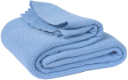
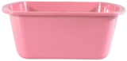
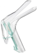
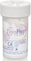
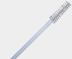
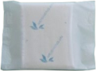

| Blanket |
 |
For patient privacy. |
| Chucks pad |
 |
Put this under the patient's arm in case of bleeding. |
| Lubricant |
|
Water based. Applied to the speculum prior to insertion. |
| Wash basin |
 |
Fill with warm water and set the unopened speculum inside. Warm speculums improve patient comfort. |
| Speculum |
 |
A hinged instrument used to visualize the cervix. Warmed up and white-colored speculums are more tolerable. |
| Fox Swab |
|
Cotton-tipped swabs for removing mucus or blood, gently repositioning the cervix. |
| Thin Prep |
 |
A container for the cervical sample. |
| Cytobrush |
 |
A brush for collecting a sample at the cervical os. |
| Papette Brush |
|
A brush for collecting a sample at the cervix. |
| Hand Wipe |
|
For cleaning hands and/or vulva after the procedure. |
| Panty liner |
 |
To be given to the patient after the procedure in case of spotting. |